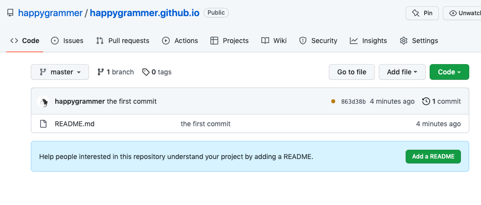

깃 저장소를 마지막 변경 파일만 남기고 커밋 이력을 초기화하고 싶은 경우가 있다. 깃 저장소 커밋 이력을 초기화 하는 방법에 대해서 살펴보자. 작업 과정을 명확히 공유하기 위해 실재 입력한 명령어와 반영된 결과 그리고 실재 작업된 결과를 첨부 하였다. 다음과 같은 순서로 진행할 예정이다.
- 원격 저장소의 파일을 지운다.
- 브랜치 작업을 이용한 커밋 히스토리 삭제
- 신규 파일 commit
파일을 삭제해 빈 저장소로 만들기
커밋 이력을 초기화하려면 temp 브랜치를 추가(추가한 temp 브랜치에는 커밋 히스토리가 없음)하고 커밋 히스토리가 있는 master 브랜치를 삭제한 후, temp 브랜치를 master 브랜치로 이름을 변경하는 것으로 가능하다. 그런데 경우에 따라서 원격 저장소의 파일들을 모두 clear 하고 커밋이력도 초기화한 깨끗한 작업 상태에서 가장 마지막 변경 파일들만 새로 신규로 커밋이 필요한 경우가 있다. 이러한 필요 때문에 먼저 원격 저장소의 파일을 비우는 것을 먼저 진행해 보기로 한다.
작업을 시작하기 위해 깃 저장소를 clone을 해온 후 해당 저장소로 이동하자
git clone https://github.com/happygrammer/happygrammer.github.io
cd happygrammer.github.io
전체 파일 인덱스 캐시를 삭제한다.
$ git rm -r --cached .
모든 파일에 대한 인덱스 캐시가 삭제된다. 이후 빈 저장소로 만들기 위해서 신규 happygrammer.github.io_new경로를 생성해 주고 해당 경로에 현재 디렉터리의 .git 저장소를 복사해 준다.
$ mkdir ../happygrammer.github.io_new
$ cp -r .git ../happygrammer.github.io_new
신규로 생성된 happygrammer.github.io_new 에는 인덱스에 포함된 파일이 없으므로 새로 만든 경로로 이동해서, stage에 삭제된 인덱스 이력을 add 해준다. 앞서 작업을 진행했듯이 새로 생성한 happygrammer.github.io_new경로에는 파일이 없다.
$ cd ../happygrammer.github.io_new
$ git add .
$ git commit -am 'removed files from the index'
[master 9552b15] removed files from the index
291 files changed, 42731 deletions(-)
delete mode 100644 .DS_Store
...
이후 github 저장소로 push를 한다.
git push -u origin master
위 push를 하면 커밋 히스토리는 유지한체 원격 깃 저장소에 아무 파일도 남지 않게 된다.
빈저장소의 커밋 히스토리 삭제
신규 브랜치를 이용해 master 브랜치의 커밋 히스토리를 삭제해 보도록 하자. 커밋 히스토리를 삭제하는 과정은 아래 순서대로 진행 예정이다.
- temp 빈 브랜치를 추가 (커밋 이력이 없음)
- master 브랜치 삭제 (커밋 이력이 있으므로 master 브랜치 삭제)
- temp 빈 브랜치를 master 브랜치로 변경한다.
명령어를 순서대로 적어 보았다 중간 중간 //로 표기된 것은 명령어가 아닌 주석이다.
$ pwd
/Users/happygrammer/Documents/_test/happygrammer.github.io_new
// 커밋 이력이 없는 temp 브랜치 생성
$ git checkout --orphan temp_branch
Switched to a new branch 'temp_branch'
// 빈파일 추가
$ touch README.md
// 브랜치에 파일 ADD 후 Commit
$ git add -A
$ git commit -am "the first commit"
[temp_branch (root-commit) 863d38b] the first commit
1 file changed, 0 insertions(+), 0 deletions(-)
create mode 100644 README.md
// 마스터 브랜치 삭제
$ git branch -D master
Deleted branch master (was 9552b15).
// 현재 브랜치 이름을 master 브랜치로 변경
$ git branch -m master
// master 브랜치를 원격 github 저장소에 push
$ git push -f origin master
Username for 'https://github.com': happygrammer
Password for 'https://happygrammer@github.com':
Enumerating objects: 3, done.
Counting objects: 100% (3/3), done.
Writing objects: 100% (3/3), 216 bytes | 216.00 KiB/s, done.
Total 3 (delta 0), reused 1 (delta 0)
To https://github.com/happygrammer/happygrammer.github.io
+ 9552b15...863d38b master -> master (forced update)
실재 반영된 github 저장소 화면은 아래와 같다.
커밋 히스토리가 초기화된 깃헙 저장소

빈저장소에 신규 파일 커밋
커밋 히스토리가 초기화 되었기 때문에 저장소에 마지막에 관리되던 파일들을 올려 주고 다시 ADD -> COMMIT -> PUSH 해주면 된다. 먼저 public이라는 폴더에 업로드할 파일이 존재한다. public 폴더 파일들을 /Users/happygrammer/Documents/_test/happygrammer.github.io_new 경로로 copy한다.
$ cp -r ./public/. /Users/happygrammer/Documents/_test/happygrammer.github.io_new
이후 파일은 일반적인 절차대로 ADD & COMMIT 해주고 원격 github 저장소로 push 해주면 된다.
$ cd /Users/happygrammer/Documents/_test/happygrammer.github.io_new
// add
$ git add .
// commit
$ git commit -m "first commit"
[master b7d2e24] first commit
291 files changed, 42731 insertions(+)
create mode 100644 .DS_Store
create mode 100644 about/index.html
// push
$ git push -u origin master
Username for 'https://github.com': happygrammer
Password for 'https://happygrammer@github.com':
Enumerating objects: 518, done.
Counting objects: 100% (518/518), done.
Delta compression using up to 8 threads
Compressing objects: 100% (221/221), done.
Writing objects: 100% (517/517), 10.64 MiB | 6.75 MiB/s, done.
Total 517 (delta 120), reused 511 (delta 119)
remote: Resolving deltas: 100% (120/120), done.
To https://github.com/happygrammer/happygrammer.github.io
863d38b..b7d2e24 master -> master
Branch 'master' set up to track remote branch 'master' from 'origin'.
참고 사항 (Token)
참고로 github은 토큰 기반 인증을 사용한다. id 입력후 password를 물어본다면 https://github.com/settings/tokens 사이트에서 발급 받은 token을 password를 입려해준다. 다른 방법으로는 원격 저장소가 clone된 path에 아래 명령어로 미리 토큰을 설치해둘 수 있다.
git remote set-url origin https://<발급받은 token키>@github.com/happygrammer/happygrammer.github.io